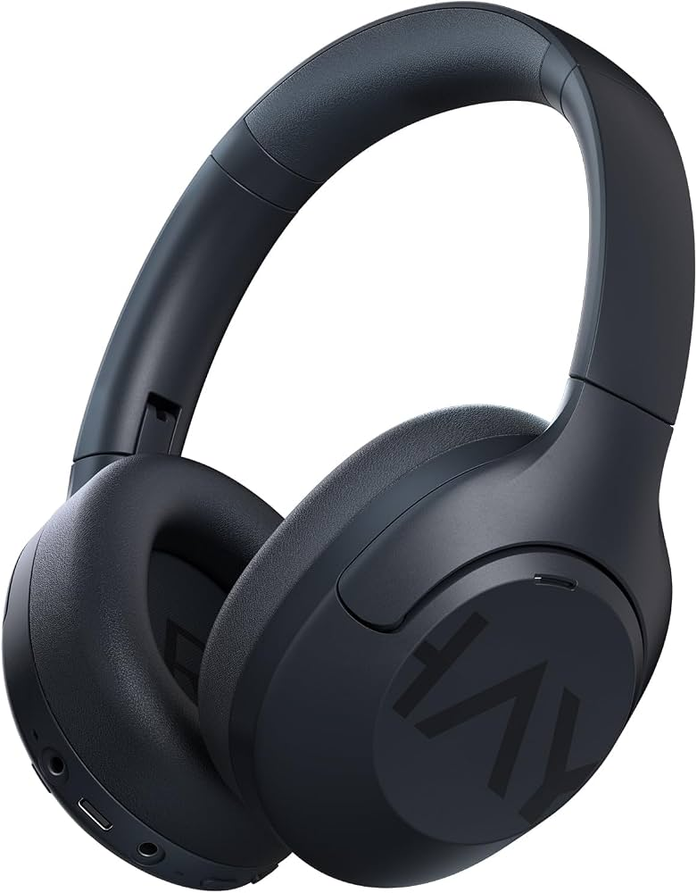

Haylou S30
Connessione…
Scarica il pannello
Il browser non può comandare le cuffie (Chrome ed Edge bloccano il loro servizio Bluetooth). Per ANC, equalizzatore e il resto usa l'app per il tuo sistema:
L'.exe non va installato: aprilo con doppio clic. Al primo avvio Windows può chiedere Ulteriori informazioni → Esegui comunque.
Modalità audio
Equalizzatore
Opzioni
Game modeBassa latenza audio
MultipointConnessione a due dispositivi insieme
Trova cuffieFa suonare un segnale nelle cuffie
Test microfono
Registra 4 secondiParla quando parte. La musica si interrompe per qualche secondo.
Su Windows scegli quello con Hands-Free o Auricolare nel nome: è lo stesso che deve usare Teams.
Le cuffie non comunicano le impostazioni attive: quelle evidenziate sono le ultime scelte da qui.